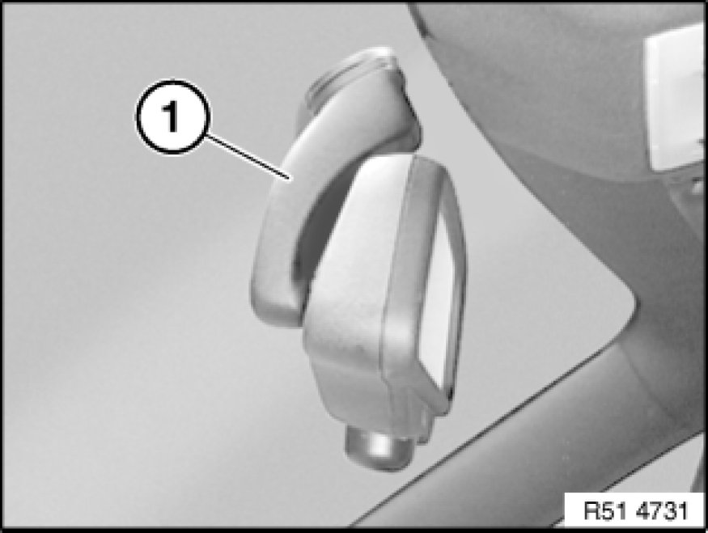
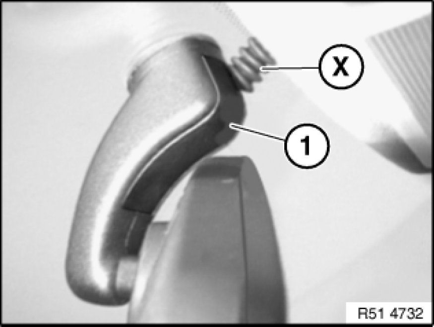
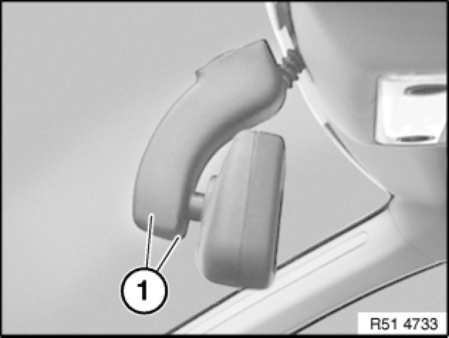
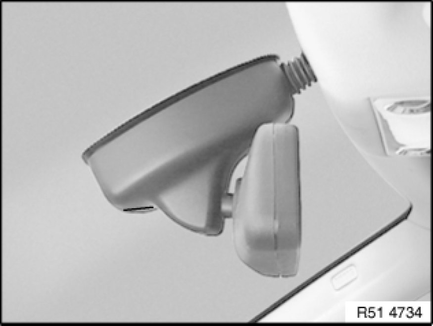
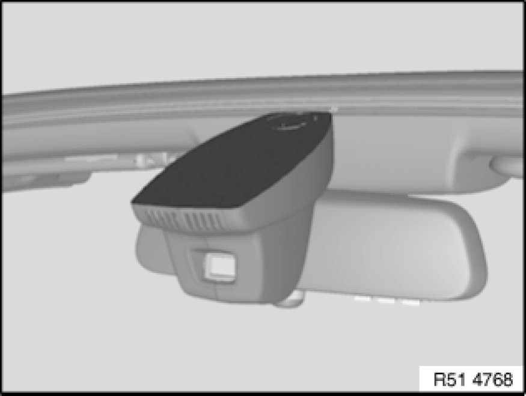
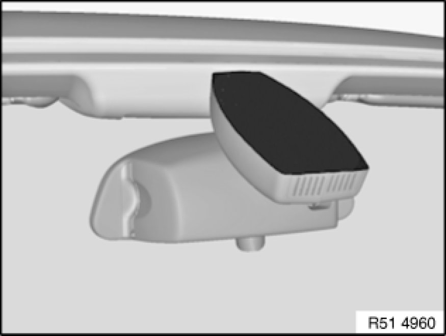

Removing and Installing/Replacing Interior Rearview Mirror (Overview)
51 16 060 - Removing and installing/replacing interior rearview mirror (overview)

Note:
Version with cable (X) for:
- Automatic dim action (electro-chrome technology) for interior rearview mirror
- Fogging sensor
- Remote control (infrared or radio)
- Autobeam
- Garage door opener
- Compass
- Rain sensor

Version without cable (X) with full foot (1).

Version with cable (X) and plug trim cover (1).

Version Removing and Installing/Replacing Interior Rearview Mirror (With Mirror Arm End Caps) with mirror arm end caps (1).

Version [1][2]51 16 060 Removing and Installing/Replacing Interior Rear-View Mirror (With Rain Sensor) with rain sensor.

Version with Autobeam.

Version Removing and Installing/Replacing Interior Rearview Mirror (With Japanese Toll Mirror) with toll mirror for Japan.